Getting Started - Fuse REST Quickstart on OpenShift
This guide demonstrates step-by-step how to create a Fuse cluster and deploy one of the quickstart applications using Red Hat’s OpenShift Online infrastructure.
The first thing you’ll do is open up a browser and navigate to OpenShift Online. If you don’t already have an account, you can sign up for a free one. However, the free account is restricted to 3 small gears which will not run JBoss Fuse instances. So you will need to upgrade to a paid account to complete this guide.
Step 1: Create A Domain/Namespace
After you’ve created an OpenShift Online account and logged in, you will end up at the landing page.
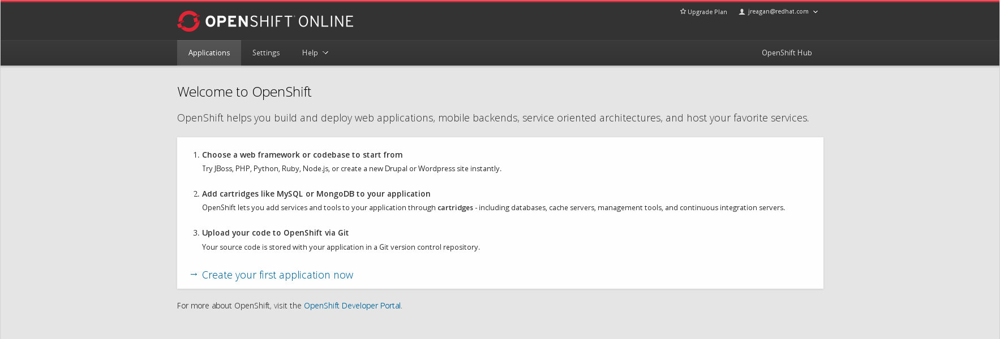
Before creating any apps, you’ll need to create a domain/namespace. If you already have a domain/namespace, and you’d like to re-use it, you can skip this step. This is a unique identifier that allows you to group applications. Click on the “Settings“ tab at the top of the page.

Enter your desired domain/namespace and click the “Create“ button.
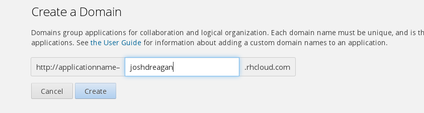
Now you’re ready to create your JBoss Fuse cluster.
Step 2: Create A JBoss Fuse Cluster
To create a JBoss Fuse cluster, first navigate to the applications page by clicking the “Applications“ button at the top of the screen.
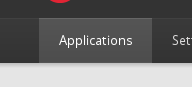
If you don’t already have any applications, you will see a link to “Create your first application now“ like in the picture below.
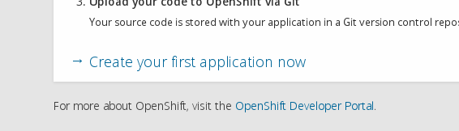
Click the link and it will begin the “Create Application“ workflow. On the first page, you will see a list of available cartridges.
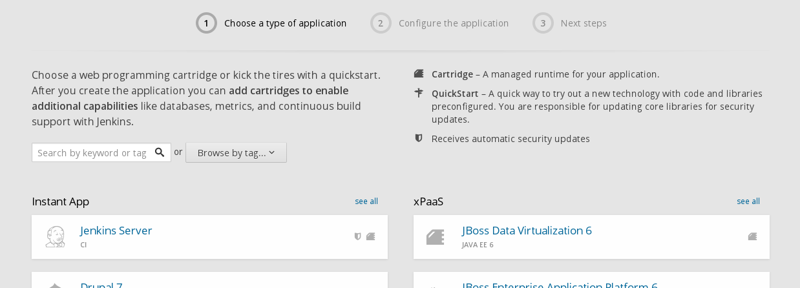
You’ll want to find and click on the “JBoss Fuse 6.1“ cartridge pictured below. If you can’t find it, you can use the search box.
Next, you’ll configure the cartridge.
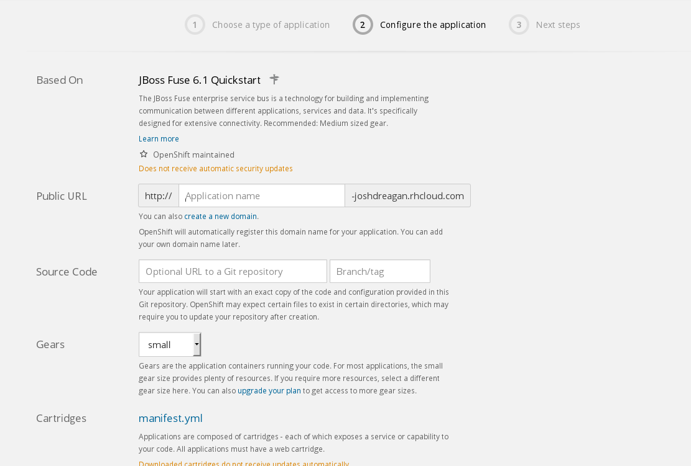
Fill in the “Public URL“ field with the desired application name. You’ll notice that it automatically appends your domain/namespace that you created in Step 1.
Select the desired “Gear Size“. You must use at least a medium sized gear to run the JBoss Fuse cartridge.
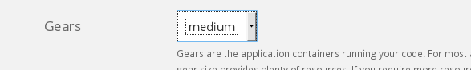
When you’re satisfied with your settings, click the “Create Application“ button. Be patient, as it might take a minute or so to finish. Do not navigate away (or refresh) the page!
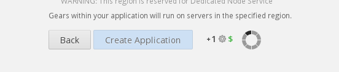
Once your application has been successfully created, you will be presented with an informational screen like the one shown below. Make sure to capture this information as you will need it later and there is no way to get it once you’ve left this page!
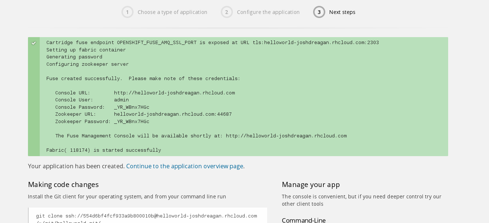
Step 3: Provision A Child Container
Now that you have a JBoss Fuse cluster, you can provision a child container with the actual quickstart deployed. Click on the “Applications“ tab at the top of the page, and you should see your newly created JBoss Fuse application.
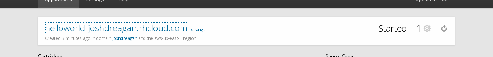
Click on that application, and it should open up the JBoss Fuse Management Console. You will need to login using the credentials that were displayed for you at the end of Step 2.
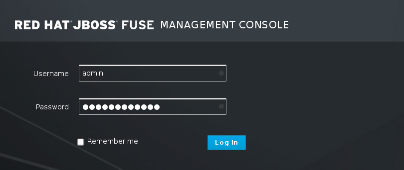
After you login, you should see the JBoss Fuse Management Console’s landing page.
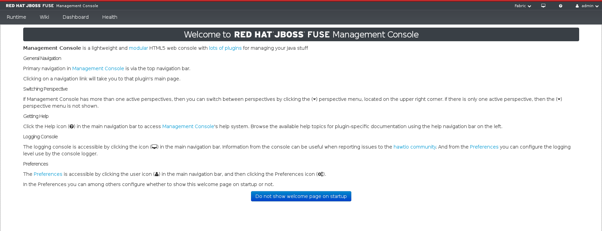
Click on the “Runtime“ tab to view the list of servers that are currently part of this cluster.
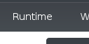
At the moment, there should be only 1 and it is the Fabric Registry server (indicated by the little cloud icon).
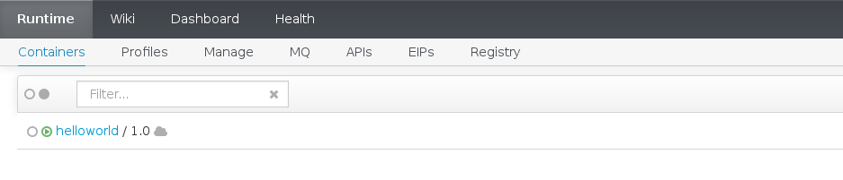
Click on the “Create“ button toward the top right of the page to begin the “Create Container“ workflow.
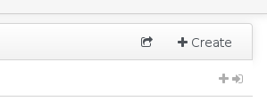
Fill in the desired “Container Name“ and “Gear Size“ making sure to use at least a medium or larger. You can enter your OpenShift Online credentials and click the “Login to OpenShift“ button to have it fill in the “OpenShift Domain“ field. Select the “rest“ profile under the “Example / Quickstarts“ folder.
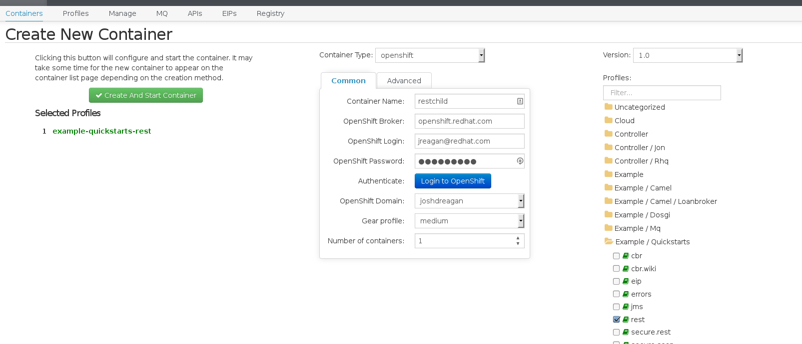
When done, click the “Create And Start Container“ button. Be patient, as it might take a minute or so to finish. Do not navigate away (or refresh) the page!
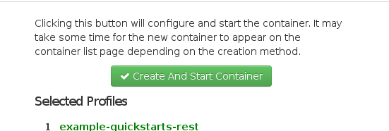
Once the container has been created, you will be redirected back to the “Containers“ page. You will notice that there are now 2. One is the Fabric Registry server, and one is hosting your application.
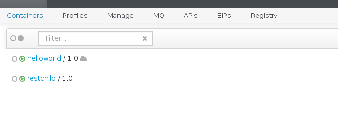
Click on the “APIs“ tab to view the base URI of the REST service you’ve just deployed. It will be in the “Location“ column.
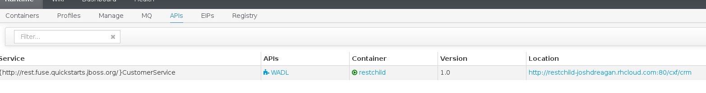
Step 4: Test The Application
Open a browser and navigate to the URI that you discovered in Step 3, appending /customerservice/customers/123. If successful, you should see some XML text come back.
If all went well, you’ve now got a running JBoss Fuse cluster with the REST quickstart deployed to a child instance.
Getting Started - Fuse REST Quickstart on OpenShift
https://blog.joshdreagan.com/2015/05/07/getting_started__fuse_rest_quickstart_on_openshift/